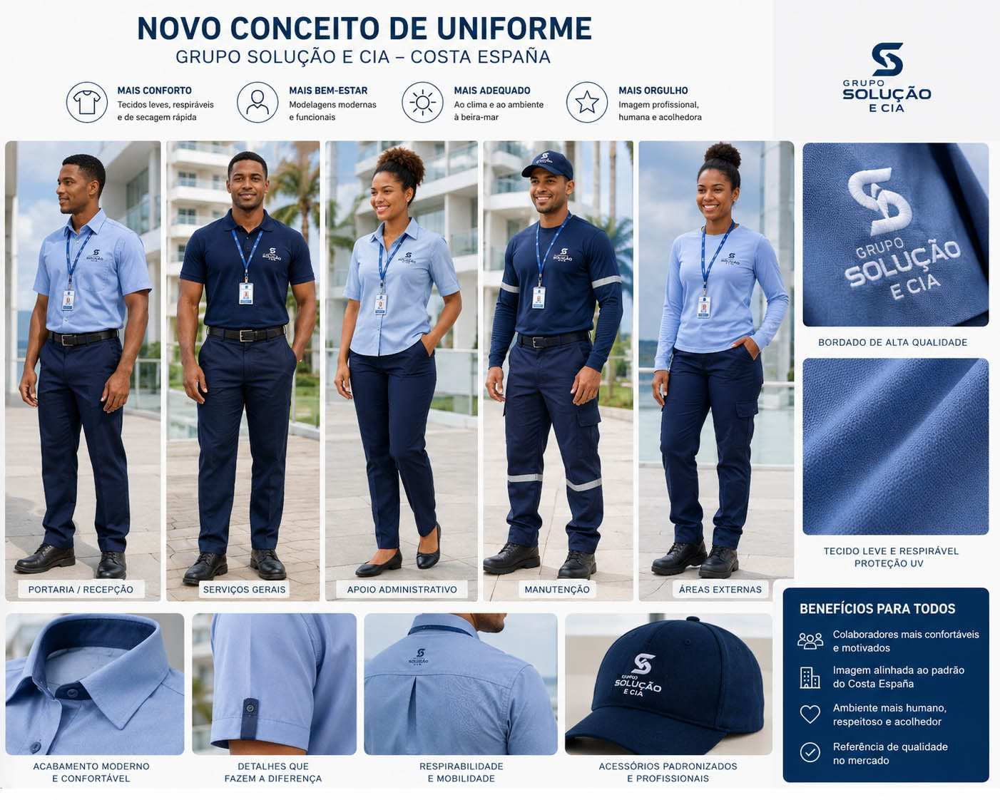

Uniformes novos
Estudo de identidade visual e apresentação dos colaboradores, como parte da cultura de cuidado do condomínio.

Proposta de padronização visual para uniformes.
Clique aqui para ver a imagem maior

Variação de referência para identidade visual dos uniformes.
Clique aqui para ver a imagem maior
Uniformes novos
O projeto de novos uniformes parte de uma ideia simples: o uniforme é um dos primeiros símbolos visíveis do padrão de excelência de um condomínio. Não se trata apenas de trocar uma roupa, mas de alinhar imagem, conforto, cuidado com pessoas e padrão de serviço.
Na conversa com o Grupo Solução e Cia, ficou claro que essa preocupação não apareceu apenas da parte do condomínio. A própria Solução e Cia também já vinha pensando nessa direção e demonstrou interesse em implementar uma evolução do conceito de uniforme.
Isso torna a pauta ainda mais positiva, porque deixa de ser uma cobrança ou crítica ao modelo atual e passa a ser uma construção conjunta. O Costa España pode funcionar como um ambiente-piloto qualificado: um lugar real, com rotina complexa, clima de Salvador, áreas externas, contato com moradores e diferentes funções operacionais.
A proposta deve considerar conforto térmico, tecidos leves e respiráveis, identificação clara, elegância discreta e funcionalidade por função. Portaria, manutenção, serviços gerais e áreas externas não precisam necessariamente ter exatamente o mesmo tipo de peça, porque as rotinas são diferentes.
O caminho mais prudente é um piloto em 60 ou 90 dias: ouvir a equipe, observar funções, testar padrões, medir conforto, avaliar durabilidade, custo, reposição e percepção dos moradores.
A participação dos moradores pode ajudar esse projeto a se tornar realidade. Não como escolha superficial de roupa, mas como apoio a uma cultura de cuidado, valorização humana e melhoria da experiência diária do condomínio.
Cuidar da imagem da equipe também é cuidar da imagem do condomínio — e fortalecer a marca de quem opera essa experiência diariamente.